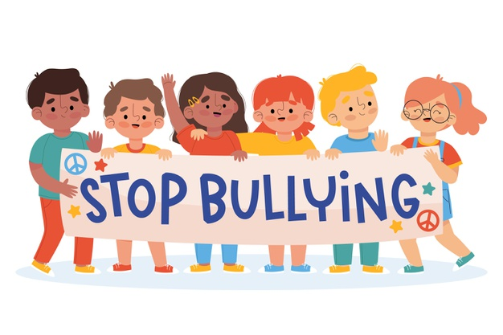
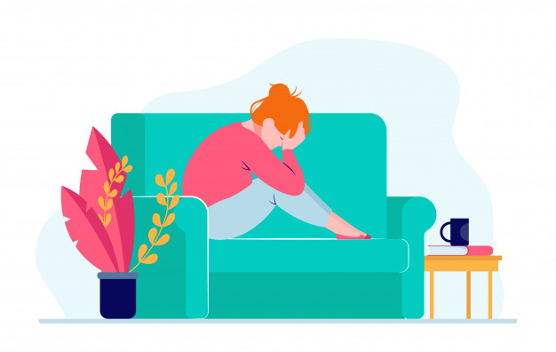

Create Account

- share your story
- comment on personal stories
- send us a question
- Suggest Edits to articles
- Leave feedback
You will be able to
You will be able to
Here we are bound together by the same thing: the need to want to live a better and healthy life. it all starts in the brain.
 Being bullied can be disheartening and miserable for the one being subjected to bullying. Bullying not only happens to children or teenagers but adults can too become victims of bullying – at the workplace, in families, in relationships, and other social settings.
Discussion: What is your experience with Bullying and how did you deal with it?
 Depression can be overwhelming. And, when you're in the midst of it, you can feel like the only person in the world that is struggling, which can make you feel very alone. Learning how to deal with depression can be the difference between you being able to overcome it or simply giving in to the symptoms of it day after day.
Discussion: What caused you to fall into depression?
Depression can make everyday life difficult, especially for those with major depressive disorder, which is 16.1 million Americans, according to the Anxiety and Depression Association of America. But, treatment, including internet-based cognitive behavioral therapy, is effective at helping people overcome it.
Unlike other mental health disorders that can be easier to detect, people with depression may find they have a tendency to "shrug off" their depressive feelings, trying to convince themselves it's just a few off days or that feeling down or sad is a normal part of life. And it is, but for how long? How do you tell the difference between sadness and depression? Reply ↓
If you've wondered if you could have depression or if the feelings you've been experiencing are reasonable, there are some common signs and symptoms to be aware of that can help you decide if you should seek professional treatment. These symptoms generally occur for most of your day without letting up and can continue on for days or even weeks and months at a time. Reply ↓
Feeling sad, lost, empty, hopeless, or just generally unhappy Losing interest in or enjoyment from activities you previously enjoyed (socializing, sex, hobbies, etc.) Changes in sleeping habits ranging from insomnia to spending most of your time sleeping or in bed Exhaustion and a lack of energy that makes even simple everyday tasks seem difficult Appetite changes (commonly lack of appetite and weight loss but occasionally increased desire to eat and weight gain)Reply ↓
While reading over the symptoms of depression may help you better understand the disorder and give you some sense of the way you're feeling, a professional diagnosis is typically necessary for successfully overcoming depression. However, if you're still unsure of how severe your symptoms are or want other resources to help you know if you're depressed, there are online depression assessments available. These assessments will ask questions to gauge your current emotional state and give you an idea of how it compares to symptoms of depression. But a formal diagnosis must come from a professional-typically your doctor or a mental health provider-and will generally consist of the following diagnostic steps:
Physical exam: this helps rule out depression-like symptoms as a result of a separate health problem. This often includes lab tests that can further rule out depression symptoms from issues with hormones, your thyroid, etc. Psychological evaluation: a discussion of your symptoms, thoughts, feelings and behavior patterns (including when they started and any notable events that may have happened to you during that time) DSM-5: Criteria for depression listed in the Diagnostic and Statistical Manual of Mental Disorders (DSM-5) that your mental health counselor can use to compare your symptoms to and make a final diagnosisReply ↓
While reading over the symptoms of depression may help you better understand the disorder and give you some sense of the way you're feeling, a professional diagnosis is typically necessary for successfully overcoming depression. However, if you're still unsure of how severe your symptoms are or want other resources to help you know if you're depressed, there are online depression assessments available. These assessments will ask questions to gauge your current emotional state and give you an idea of how it compares to symptoms of depression. But a formal diagnosis must come from a professional-typically your doctor or a mental health provider-and will generally consist of the following diagnostic steps:Reply ↓
Physical exam: this helps rule out depression-like symptoms as a result of a separate health problem. This often includes lab tests that can further rule out depression symptoms from issues with hormones, your thyroid, etc. Psychological evaluation: a discussion of your symptoms, thoughts, feelings and behavior patterns (including when they started and any notable events that may have happened to you during that time) DSM-5: Criteria for depression listed in the Diagnostic and Statistical Manual of Mental Disorders (DSM-5) that your mental health counselor can use to compare your symptoms to and make a final diagnosis Reply ↓
Having a strong support system can help you feel not alone. Having people you trust around you to back you up can be helpful. Your support system is there to help you, encourage you, and help you stay positive. If you’re having trouble dealing with bullies, then you can trust your support system for advice. Bullying can be scary but it can feel less scary when you have a support system to fall back on.
If you find yourself being bullied, then you need to speak up and report the incident to concerned authorities. Staying silent when you’re being bullied is not healthy or helpful. If you speak up and stand up against your bullies today then you are less likely to feel the long-term effects of bullying.Remember that by speaking up and standing strong, you’re also helping others who can’t stand against their bullies themselves. Reply ↓
Like mentioned before, dealing with bullies and the effects of bullying can be challenging. If you’re facing trouble overcoming the challenges, it is better to seek professional help from a mental healthcare provider. A therapist or counselor can help you learn how to block the source of bullying and find various coping techniques to help you deal with your bullies. Reply ↓
The first thing you can do to overcome the effects of bullying is – allowing yourself to just feel the emotions flowing through you. Many times, people are told to “get over it” but it is not healthy if you don’t allow yourself to process your emotions. Bullying can cause you to feel anger, sadness, hurt, frustration, irritation, etc., and experiencing such emotions is okay. Reply ↓
Like mentioned before, dealing with bullies and the effects of bullying can be challenging. If you’re facing trouble overcoming the challenges, it is better to seek professional help from a mental healthcare provider. A therapist or counselor can help you learn how to block the source of bullying and find various coping techniques to help you deal with your bullies. Reply ↓
The first thing you can do to overcome the effects of bullying is – allowing yourself to just feel the emotions flowing through you. Many times, people are told to “get over it” but it is not healthy if you don’t allow yourself to process your emotions. Bullying can cause you to feel anger, sadness, hurt, frustration, irritation, etc., and experiencing such emotions is okay. Reply ↓
Like mentioned before, dealing with bullies and the effects of bullying can be challenging. If you’re facing trouble overcoming the challenges, it is better to seek professional help from a mental healthcare provider. A therapist or counselor can help you learn how to block the source of bullying and find various coping techniques to help you deal with your bullies. Reply ↓
The first thing you can do to overcome the effects of bullying is – allowing yourself to just feel the emotions flowing through you. Many times, people are told to “get over it” but it is not healthy if you don’t allow yourself to process your emotions. Bullying can cause you to feel anger, sadness, hurt, frustration, irritation, etc., and experiencing such emotions is okay. Reply ↓